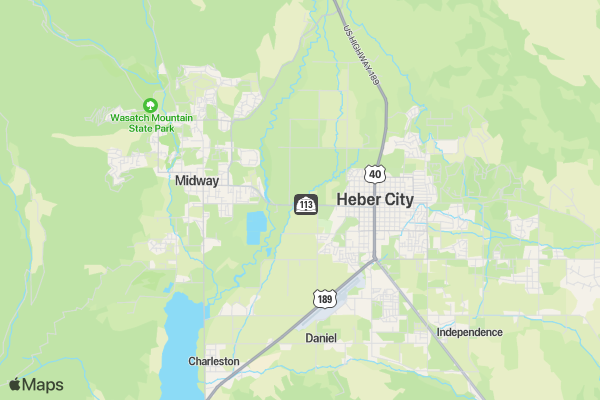

Where is Heber City?
Its in Wasatch county, UT. Here is a map below, or just look us up on your device.

Surrounded by mountins, lakes, and valleys, Heber is an ideal location, placed 30 minutes away from Provo and 1:20ish minutes from the SLC airport.